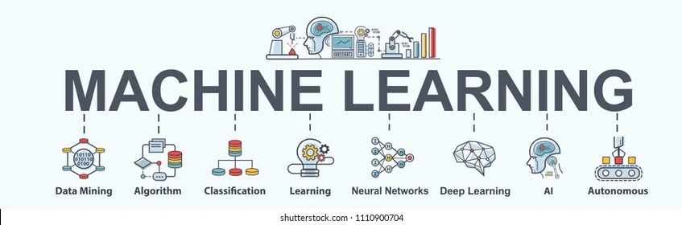

Machine Learning
Machine Learning:
What does it do?
Machine learning is a method of data analysis that reads and adapts based on the data presented repetitively, resulting in the ability to learn and improve results based on new data independently. It is a branch of artificial intelligence that uses pattern recognition to train its algorithms to adjust itself according to data based on a measurement of error. For example machine learning is used in situations like voice recognition where every input has a different tone and accent, the algorithm will compare the inputs to it’s expected output during its ‘training’ phase and adjust its own values accordingly.
The most basic form of machine learning is from a neural network structure consisting of an input layer, hidden layer and output layer. The input layer is the data that we give to the algorithm which can be anything like age, gender, political stance, etc. Each of these inputs are assigned weights which are randomly generated values that will affect how prominent the input will be used in the outcome. The output is the combination of all inputs multiplied by independent weights, the sum will also have a biased added which is a constant value used to adjust the output to be more appropriate. Deep learning uses an extra layer called the hidden layer, where the sum of the input multiplied by weighted added by biased is fitted into an activation function which fits the number between -1 and 1 or 1 and 0, this normalizes the data and determines how strong this data will affect during the calculation of the final output. The hidden layer can have as many outputs from the input layer as the developer desires. These hidden values will then be used just like the input value to determine the output. The advantage of the hidden layer is to add complexity and thought to the algorithm and increase the success of the output. There can also be multiple hidden layers, forming a chain like structure. This algorithm is used in a testing phase where the developer selects the inputs and expected output which will form the foundation and reference of the algorithm’s pattern recognition. Then we head to the mutation phase where we measure the margin of error between the expected output and actual output and use the value to adjust every weight accordingly. Which completes one cycle out of many iterations to ensure an accurate and successful machine learning algorithm.
What can be done now?
Machine learning is often used in businesses where it recognises trends and provides feedback. An example is the youtube algorithm which uses machine learning, it takes into account which videos users select, the length of video and how long they’ve watched as well as subscriptions. These are all inputs used to decide what video to recommend for the user to watch. Machine learning is also used for recognising real-life objects where the user is prompted to select the images matching a description which will then be added to the database, helping the pattern recognition identify the different variations of the same object like cars. The use of machine learning is able to expand to several categories since it was designed to mimic the human brain, therefore the reason why the algorithm resembles a neural network structure found in the brain. When the brain chooses to maintain a stronger memory of certain things, the corresponding neurons are brought closer and the signals are stronger in order to replicate that specific memory; same with the weights in the algorithm that determine which output is more important and associated with achieving the correct output, through repetition will the weights reach the correct value associated with the output’s desire.
What is the likely impact
Machine learning is capable of predicting future outcomes such as bias in medicine, where machine learning will be able to predict the likelihood of someone having a heart attack with better accuracy. Accurate predictions can allow physicians to be earlier prepared and ready to intervene rather than when it is too late which can save many lives in the process and overall improve health care services. Machine learning is also being used for automation such as self driving cars and factories, but mostly bringing change to businesses such as analysis on the market, where it can react to changes in trend and act quickly; Businesses with the best algorithm will gain an advantage compared to other businesses, machine learning will be at the core of reliance in businesses from analysing to advertising, feedback, maintenance, recognition, security improvement and data logging. Machine learning is capable of analysing and predicting many outcomes given the appropriate inputs such as “[forecasting] the Unemployment Rate in Australia as a result of Covid-19” (becominghuman.ai) using the following input values: Monthly unemployment rates, quarterly economy data, quarterly unemployment rate and quarterly wages and salaries by state. Jobs are also being replaced by advanced machine learning since the pattern recognition’s analysis is fast and has great levels of depth, leaving many people unemployed. Governments will be able to predict future scenarios and create counter measures to adapt to rapidly changing situations, neutralize terrorism and save many lives in the process.
How will this affect you?
Machine learning will improve medical care as it will be able to deduce problems based on comparison on over many incidents but also through prediction. Self-driving may be an option in the future as it may surpass human-driving safety therefore prevent any risks but also allow multitasking which is most suitable for people with busy careers. Augmentations may also be improved, which can help restore lost control over daily tasks; it will improve healthcare in the future in the case of incidents where certain conditions are life threatening such as artificial hearts or mechanical limbs designed to fit a patient’s comfortability. Certains jobs are likely to be replaced due to its superior and quick analysis, but it will also replace the most dangerous jobs which can save lives. Machine learning is already implemented in voice recognitions which allows us to accomplish certain tasks verbally such as browsing on tv or asking the phone to navigate information. Machine learning is definitely being implemented all around and can be seen being used on the most basic things like logging and sorting such as timetables, being optimized to produce the most suitable timetable for every person.